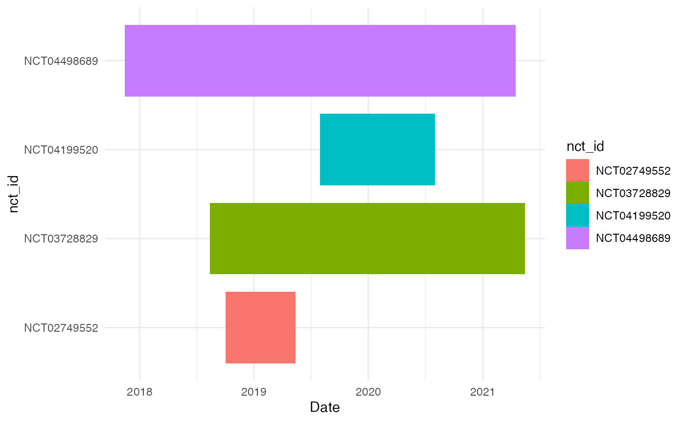

introduction.RmdThis vignette gives a very brief overview of the current package. To start, we load the package into R.
library(ctrialsgov)In the next few sections, we see how to setup the data set, query it, and then visualize the output.
Before querying the ClinicalTrials.gov data, we need to load a pre-processed version of the data into R. There are three ways to do this. If you have installed a copy of the data set locally into PostGRES, the data can be created from scratch with the following block of code (it will take a couple of minutes to finish):
library(DBI)
library(RPostgreSQL)
drv <- dbDriver('PostgreSQL')
con <- DBI::dbConnect(drv, dbname="aact")
ctgov_create_data(con)Alternatively, we can download a static version of the data from GitHub and load this into R without needing the setup a local version of the database. This will be cached locally so that it can be re-loaded without downloading each time. To download and load this data, use the following: [the data is currently included with the package rather than downloaded]
Finally, we can load a small sample dataset (2% of the total) that is included with the package itself using the following:
This is the version of the data that is used in most of the tests, examples, and in this vignette.
The primary function for querying the dataset is called ctgov_query. It can be called after using any of the functions in the previous section. Here are a few examples of how the function works. We will see a few examples here; see the help pages for a complete list of options.
There are a number of fields in the data that use exact matches of categories. Here, for example, we find the interventional studies:
ctgov_query(study_type = "Interventional")## # A tibble: 5,821 x 28
## nct_id start_date phase enrollment brief_title official_title
## <chr> <date> <chr> <int> <chr> <chr>
## 1 NCT033… 2021-12-31 N/A 120 "Warm and Humidif… "Warm and Humidified…
## 2 NCT046… 2021-12-01 N/A 30 "Mask Hypoxia in … "To Determine the Pr…
## 3 NCT033… 2021-11-01 N/A 20 "Platelet Rich Pl… "Assessment of the S…
## 4 NCT043… 2021-11-01 N/A 86 "Impact in Qualit… "Impact in Quality o…
## 5 NCT047… 2021-10-31 Phase… 12 "Depleted Donor S… "TCRαβ+ T-cell/CD19+…
## 6 NCT048… 2021-10-29 Phase… 38 "Tegavivint for t… "A Phase 1/2 Study o…
## 7 NCT045… 2021-09-30 N/A 112 "DASH INterventio… "Determining the str…
## 8 NCT044… 2021-09-30 Phase… 30 "Hypofractionated… "Phase II Trial of P…
## 9 NCT048… 2021-09-30 Phase… 65 "ASP8374 + Cemipl… "Phase Ib Trial of A…
## 10 NCT048… 2021-09-30 N/A 94 "Effects of a Hig… "The Effects of a Hi…
## # … with 5,811 more rows, and 22 more variables:
## # primary_completion_date <date>, study_type <chr>, description <chr>,
## # eudract_num <chr>, other_id <chr>, allocation <chr>,
## # intervention_model <chr>, observational_model <chr>, primary_purpose <chr>,
## # time_perspective <chr>, masking_description <chr>,
## # intervention_model_description <chr>, sampling_method <chr>, gender <chr>,
## # minimum_age <dbl>, maximum_age <dbl>, population <chr>, criteria <chr>,
## # sponsor <chr>, sponsor_type <chr>, conditions <chr>,
## # interventions <list<tibble>>Or, all of the interventional studies that have a primary industry sponsor:
ctgov_query(study_type = "Interventional", sponsor_type = "Industry")## # A tibble: 1,596 x 28
## nct_id start_date phase enrollment brief_title official_title
## <chr> <date> <chr> <int> <chr> <chr>
## 1 NCT046… 2021-07-15 N/A 100 Real-time Diagnos… Real-time Diagnosis …
## 2 NCT048… 2021-06-30 Phase… 24 A Study Evaluatin… A Phase 1/2a, Double…
## 3 NCT048… 2021-06-04 Phase… 110 Protonix Treatmen… An Exploratory, Mult…
## 4 NCT048… 2021-06-01 Phase… 40 A Phase 1, First-… A Phase 1, First-In-…
## 5 NCT048… 2021-06-01 Phase… 80 Perivenous Dexame… Perivenous Dexametha…
## 6 NCT047… 2021-05-31 Phase… 450 Study Evaluating … A Randomized, Open-l…
## 7 NCT048… 2021-05-31 Phase… 172 Oral Combination … Efficacy and Safety …
## 8 NCT048… 2021-05-31 Phase… 18 Study to Assess t… An Open-label, Multi…
## 9 NCT047… 2021-05-30 Phase… 418 Trial to Evaluate… Randomized, Controll…
## 10 NCT048… 2021-05-30 Phase… 12 Evaluating the Ph… Open-label Uncontrol…
## # … with 1,586 more rows, and 22 more variables:
## # primary_completion_date <date>, study_type <chr>, description <chr>,
## # eudract_num <chr>, other_id <chr>, allocation <chr>,
## # intervention_model <chr>, observational_model <chr>, primary_purpose <chr>,
## # time_perspective <chr>, masking_description <chr>,
## # intervention_model_description <chr>, sampling_method <chr>, gender <chr>,
## # minimum_age <dbl>, maximum_age <dbl>, population <chr>, criteria <chr>,
## # sponsor <chr>, sponsor_type <chr>, conditions <chr>,
## # interventions <list<tibble>>A few fields have continuous values that can be searched by giving a vector with two values. The results return any values that fall between the lower bound (first value) and the upper bound (second value). Here, we find the studies that have between 40 and 42 patients enrolled in them:
ctgov_query(enrollment_range = c(40, 42))## # A tibble: 253 x 28
## nct_id start_date phase enrollment brief_title official_title
## <chr> <date> <chr> <int> <chr> <chr>
## 1 NCT048… 2021-06-01 Phase… 40 A Phase 1, First-… A Phase 1, First-In-…
## 2 NCT048… 2021-05-31 Phase… 40 TLR-9 Adjuvanted … Augmentation of Humo…
## 3 NCT043… 2021-05-31 <NA> 42 COA-APTIC Caregiv… COA-APTIC Caregiver …
## 4 NCT048… 2021-05-01 N/A 40 Acceptability, Fe… The CF Wellness Prog…
## 5 NCT046… 2021-04-13 N/A 40 Exercise as Adjun… A Telehealth Physica…
## 6 NCT044… 2021-04-01 N/A 40 Pilot RCT Feasibi… A Nurse-led Interven…
## 7 NCT048… 2021-03-17 N/A 40 NuGa (Nutrition f… A Pilot Study to Eva…
## 8 NCT047… 2021-03-01 N/A 40 Efficacy of Magne… Efficacy of Magnesiu…
## 9 NCT047… 2021-02-25 N/A 40 Effects of Dry Ne… Effects of Dry Needl…
## 10 NCT047… 2021-02-18 N/A 40 Efficacy of Exerc… Efficacy of Selected…
## # … with 243 more rows, and 22 more variables: primary_completion_date <date>,
## # study_type <chr>, description <chr>, eudract_num <chr>, other_id <chr>,
## # allocation <chr>, intervention_model <chr>, observational_model <chr>,
## # primary_purpose <chr>, time_perspective <chr>, masking_description <chr>,
## # intervention_model_description <chr>, sampling_method <chr>, gender <chr>,
## # minimum_age <dbl>, maximum_age <dbl>, population <chr>, criteria <chr>,
## # sponsor <chr>, sponsor_type <chr>, conditions <chr>,
## # interventions <list<tibble>>Setting one end of the range to missing avoids searching for that end of the range. For example, the following finds any studies with 1000 or more patients.
ctgov_query(enrollment_range = c(1000, NA))## # A tibble: 450 x 28
## nct_id start_date phase enrollment brief_title official_title
## <chr> <date> <chr> <int> <chr> <chr>
## 1 NCT043… 2021-06-30 <NA> 1300 Adult Functioning… Developing a Gold St…
## 2 NCT039… 2021-06-30 N/A 2892 Maternal Hyperoxy… Maternal Hyperoxygen…
## 3 NCT043… 2021-06-30 <NA> 2000 Advance Directive… Advance Directive Im…
## 4 NCT046… 2021-05-31 Phase… 1476 AZithromycin Ther… AZithromycin Therapy…
## 5 NCT048… 2021-05-28 Phase… 28000 A Phase III Clini… A Global, Multi-cent…
## 6 NCT039… 2021-05-17 <NA> 9999 Structural Heart … NHLBI Structural Hea…
## 7 NCT048… 2021-05-01 <NA> 2000 Multicentric Bone… Multicentric Study f…
## 8 NCT041… 2021-05-01 N/A 1055 Orthotics for Tre… Orthotics for Treatm…
## 9 NCT047… 2021-04-30 Phase… 1466 STOPping Anticoag… STOPping Anticoagula…
## 10 NCT046… 2021-04-26 N/A 1211 St. Joe's Invitat… Increasing Cancer Sc…
## # … with 440 more rows, and 22 more variables: primary_completion_date <date>,
## # study_type <chr>, description <chr>, eudract_num <chr>, other_id <chr>,
## # allocation <chr>, intervention_model <chr>, observational_model <chr>,
## # primary_purpose <chr>, time_perspective <chr>, masking_description <chr>,
## # intervention_model_description <chr>, sampling_method <chr>, gender <chr>,
## # minimum_age <dbl>, maximum_age <dbl>, population <chr>, criteria <chr>,
## # sponsor <chr>, sponsor_type <chr>, conditions <chr>,
## # interventions <list<tibble>>Similarly, we can give a range of dates. These are given in the form of strings as “YYYY-MM-DD”:
ctgov_query(date_range = c("2020-01-01", "2020-02-01"))## # A tibble: 62 x 28
## nct_id start_date phase enrollment brief_title official_title
## <chr> <date> <chr> <int> <chr> <chr>
## 1 NCT041… 2020-02-01 <NA> 440 Cardiac Dysfuncti… Cardiac Dysfunction …
## 2 NCT040… 2020-02-01 N/A 34 Photobiomodulatio… Evaluation of the Ef…
## 3 NCT046… 2020-02-01 N/A 40 Comparing Adjusta… Comparison Between I…
## 4 NCT039… 2020-02-01 Phase… 30 Imaging of Neuro-… Imaging of Glial Act…
## 5 NCT042… 2020-02-01 Early… 50 Effects of Empagl… Effects of Empaglifl…
## 6 NCT038… 2020-02-01 N/A 140 The Effects of Om… The Effects of Omega…
## 7 NCT042… 2020-02-01 N/A 150 Pain After Preope… Pain After Preoperat…
## 8 NCT044… 2020-02-01 N/A 300 Psychological Int… Psychological Interv…
## 9 NCT035… 2020-02-01 Phase… 120 Urate Lowering Th… The Cardiovascular E…
## 10 NCT042… 2020-02-01 <NA> 800 A Survey of Manag… A Survey of Manageme…
## # … with 52 more rows, and 22 more variables: primary_completion_date <date>,
## # study_type <chr>, description <chr>, eudract_num <chr>, other_id <chr>,
## # allocation <chr>, intervention_model <chr>, observational_model <chr>,
## # primary_purpose <chr>, time_perspective <chr>, masking_description <chr>,
## # intervention_model_description <chr>, sampling_method <chr>, gender <chr>,
## # minimum_age <dbl>, maximum_age <dbl>, population <chr>, criteria <chr>,
## # sponsor <chr>, sponsor_type <chr>, conditions <chr>,
## # interventions <list<tibble>>Finally, we can also search free text fields using keywords. The following for example finds and study that includes the phrase “lung cancer” (ignoring case) in the description field:
ctgov_query(description_kw = "lung cancer")## # A tibble: 103 x 28
## nct_id start_date phase enrollment brief_title official_title
## <chr> <date> <chr> <int> <chr> <chr>
## 1 NCT045… 2021-03-31 Phase… 142 Safety and Effica… A Phase 1b/2 Multipl…
## 2 NCT046… 2021-01-31 Phase… 100 Combined Atezoliz… Clinical Study of Pr…
## 3 NCT045… 2020-12-01 <NA> 100 The Establishment… The Establishment an…
## 4 NCT034… 2020-10-31 <NA> 0 Ethnic/Racial Dif… Ethnic/Racial Differ…
## 5 NCT044… 2020-09-24 Phase… 15 A Study of the Sa… An Open-label, Safet…
## 6 NCT038… 2020-09-10 Phase… 90 Apatinib Combined… A Prospective, Multi…
## 7 NCT035… 2020-09-01 <NA> 6000 Lung Cancer Scree… LUng Cancer Screenin…
## 8 NCT047… 2020-04-17 <NA> 500 LALUCA Research P… Landsteiner Lung Can…
## 9 NCT042… 2019-12-24 Phase… 362 D-0316 Versus Ico… A Phase II/III, Open…
## 10 NCT041… 2019-11-05 Early… 20 [18F]-AraG for th… Imaging of T-Cell Ac…
## # … with 93 more rows, and 22 more variables: primary_completion_date <date>,
## # study_type <chr>, description <chr>, eudract_num <chr>, other_id <chr>,
## # allocation <chr>, intervention_model <chr>, observational_model <chr>,
## # primary_purpose <chr>, time_perspective <chr>, masking_description <chr>,
## # intervention_model_description <chr>, sampling_method <chr>, gender <chr>,
## # minimum_age <dbl>, maximum_age <dbl>, population <chr>, criteria <chr>,
## # sponsor <chr>, sponsor_type <chr>, conditions <chr>,
## # interventions <list<tibble>>We can search two terms at once as well, by default it finds things that match at least one of the terms:
ctgov_query(description_kw = c("lung cancer", "colon cancer"))## # A tibble: 116 x 28
## nct_id start_date phase enrollment brief_title official_title
## <chr> <date> <chr> <int> <chr> <chr>
## 1 NCT045… 2021-03-31 Phase… 142 Safety and Effica… A Phase 1b/2 Multipl…
## 2 NCT046… 2021-03-01 N/A 50 Systemic and Peri… Systemic and Periton…
## 3 NCT046… 2021-01-31 Phase… 100 Combined Atezoliz… Clinical Study of Pr…
## 4 NCT045… 2020-12-01 <NA> 100 The Establishment… The Establishment an…
## 5 NCT034… 2020-10-31 <NA> 0 Ethnic/Racial Dif… Ethnic/Racial Differ…
## 6 NCT044… 2020-09-24 Phase… 15 A Study of the Sa… An Open-label, Safet…
## 7 NCT038… 2020-09-10 Phase… 90 Apatinib Combined… A Prospective, Multi…
## 8 NCT035… 2020-09-01 <NA> 6000 Lung Cancer Scree… LUng Cancer Screenin…
## 9 NCT047… 2020-04-17 <NA> 500 LALUCA Research P… Landsteiner Lung Can…
## 10 NCT042… 2019-12-24 Phase… 362 D-0316 Versus Ico… A Phase II/III, Open…
## # … with 106 more rows, and 22 more variables: primary_completion_date <date>,
## # study_type <chr>, description <chr>, eudract_num <chr>, other_id <chr>,
## # allocation <chr>, intervention_model <chr>, observational_model <chr>,
## # primary_purpose <chr>, time_perspective <chr>, masking_description <chr>,
## # intervention_model_description <chr>, sampling_method <chr>, gender <chr>,
## # minimum_age <dbl>, maximum_age <dbl>, population <chr>, criteria <chr>,
## # sponsor <chr>, sponsor_type <chr>, conditions <chr>,
## # interventions <list<tibble>>But the match_all flag can be set to search for both terms at the same time (here, that returns no matches):
ctgov_query(description_kw = c("lung cancer", "colon cancer"), match_all = TRUE)## # A tibble: 0 x 28
## # … with 28 variables: nct_id <chr>, start_date <date>, phase <chr>,
## # enrollment <int>, brief_title <chr>, official_title <chr>,
## # primary_completion_date <date>, study_type <chr>, description <chr>,
## # eudract_num <chr>, other_id <chr>, allocation <chr>,
## # intervention_model <chr>, observational_model <chr>, primary_purpose <chr>,
## # time_perspective <chr>, masking_description <chr>,
## # intervention_model_description <chr>, sampling_method <chr>, gender <chr>,
## # minimum_age <dbl>, maximum_age <dbl>, population <chr>, criteria <chr>,
## # sponsor <chr>, sponsor_type <chr>, conditions <chr>,
## # interventions <list<tibble>>Other keyword fields include official_title_kw, source_kw and criteria_kw.
Any of the options can be combined as needed.
ctgov_query(
description_kw = "cancer",
enrollment_range = c(100, 200),
date_range = c("2019-01-01", "2020-02-01")
)## # A tibble: 11 x 28
## nct_id start_date phase enrollment brief_title official_title
## <chr> <date> <chr> <int> <chr> <chr>
## 1 NCT041… 2020-01-31 Phase… 155 Compare the Effic… Compare the Efficacy…
## 2 NCT046… 2020-01-22 Phase… 100 Performance of Co… Performance of Contr…
## 3 NCT040… 2020-01-10 Phase… 125 YIV-906 (Formerly… A Phase II Randomize…
## 4 NCT037… 2019-12-30 <NA> 100 Targeted Next Gen… An Observational Pha…
## 5 NCT043… 2019-11-29 <NA> 200 ctDNA Monitoring … Monitoring Circulati…
## 6 NCT041… 2019-09-26 Phase… 104 Study of Tazemeto… A Phase 1b/2 Open-La…
## 7 NCT044… 2019-08-01 Phase… 117 Efficacy and Safe… A Phase II, Single-a…
## 8 NCT041… 2019-07-15 N/A 110 Quality of Life a… Fibromyalgia: Impact…
## 9 NCT037… 2019-04-29 Phase… 192 A Single-Arm Stud… A Phase 2, Single-Ar…
## 10 NCT029… 2019-01-25 Phase… 102 Vaccination of Tr… A Combined Phase i/I…
## 11 NCT027… 2019-01-22 N/A 200 The Role of Value… The Role of Values, …
## # … with 22 more variables: primary_completion_date <date>, study_type <chr>,
## # description <chr>, eudract_num <chr>, other_id <chr>, allocation <chr>,
## # intervention_model <chr>, observational_model <chr>, primary_purpose <chr>,
## # time_perspective <chr>, masking_description <chr>,
## # intervention_model_description <chr>, sampling_method <chr>, gender <chr>,
## # minimum_age <dbl>, maximum_age <dbl>, population <chr>, criteria <chr>,
## # sponsor <chr>, sponsor_type <chr>, conditions <chr>,
## # interventions <list<tibble>>Finally, we can also pass a current version of the data set to the query function, rather than starting with the full data set. This is useful when you want to combine queries in a more complex way. For example, this is equivalent to the above:
library(dplyr)
ctgov_query() %>%
ctgov_query(description_kw = "cancer") %>%
ctgov_query(enrollment_range = c(100, 200)) %>%
ctgov_query(date_range = c("2019-01-01", "2020-02-01"))## # A tibble: 11 x 28
## nct_id start_date phase enrollment brief_title official_title
## <chr> <date> <chr> <int> <chr> <chr>
## 1 NCT041… 2020-01-31 Phase… 155 Compare the Effic… Compare the Efficacy…
## 2 NCT046… 2020-01-22 Phase… 100 Performance of Co… Performance of Contr…
## 3 NCT040… 2020-01-10 Phase… 125 YIV-906 (Formerly… A Phase II Randomize…
## 4 NCT037… 2019-12-30 <NA> 100 Targeted Next Gen… An Observational Pha…
## 5 NCT043… 2019-11-29 <NA> 200 ctDNA Monitoring … Monitoring Circulati…
## 6 NCT041… 2019-09-26 Phase… 104 Study of Tazemeto… A Phase 1b/2 Open-La…
## 7 NCT044… 2019-08-01 Phase… 117 Efficacy and Safe… A Phase II, Single-a…
## 8 NCT041… 2019-07-15 N/A 110 Quality of Life a… Fibromyalgia: Impact…
## 9 NCT037… 2019-04-29 Phase… 192 A Single-Arm Stud… A Phase 2, Single-Ar…
## 10 NCT029… 2019-01-25 Phase… 102 Vaccination of Tr… A Combined Phase i/I…
## 11 NCT027… 2019-01-22 N/A 200 The Role of Value… The Role of Values, …
## # … with 22 more variables: primary_completion_date <date>, study_type <chr>,
## # description <chr>, eudract_num <chr>, other_id <chr>, allocation <chr>,
## # intervention_model <chr>, observational_model <chr>, primary_purpose <chr>,
## # time_perspective <chr>, masking_description <chr>,
## # intervention_model_description <chr>, sampling_method <chr>, gender <chr>,
## # minimum_age <dbl>, maximum_age <dbl>, population <chr>, criteria <chr>,
## # sponsor <chr>, sponsor_type <chr>, conditions <chr>,
## # interventions <list<tibble>>The package (will) also contain a number of tools for visualizing the output. Here is one example:
ctgov_query(
description_kw = "cancer",
enrollment_range = c(100, 200),
date_range = c("2019-01-01", "2020-02-01")
) %>%
ctgov_plot_timeline(df)## Warning: Unknown or uninitialised column: `disease`.## Warning: Unknown or uninitialised column: `drug`.## Warning: Unknown or uninitialised column: `status`.## Warning: Unknown or uninitialised column: `source`.